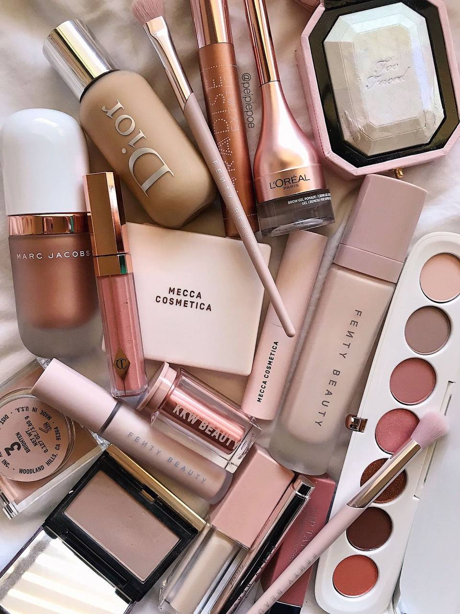
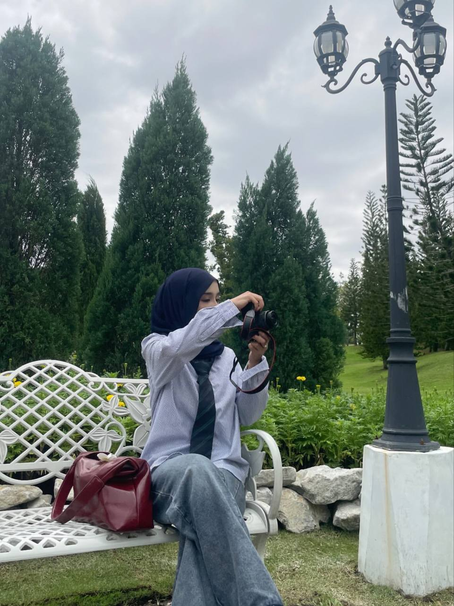
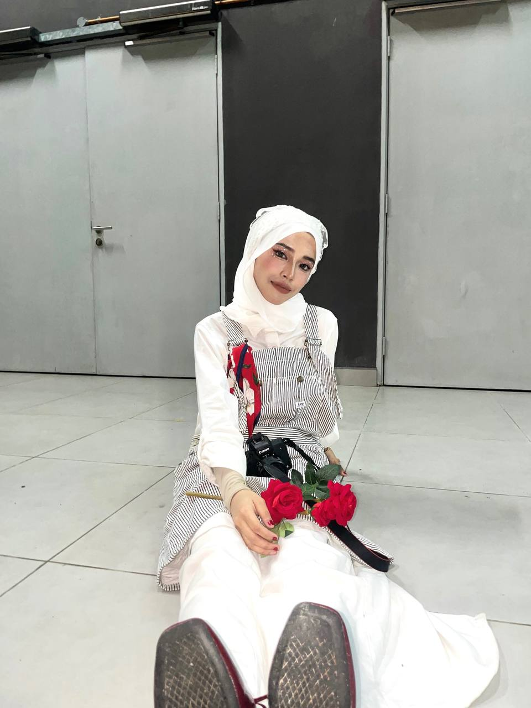

MakeupI really enjoy doing makeup because it allows me to express myself creatively and boost my confidence. Each time I pick up a brush or try a new product, it feels like I’m starting a mini art project, experimenting with colors and techniques to create something that reflects my mood or style. Whether it’s a simple, natural look or something more bold and dramatic, makeup gives me the freedom to transform how I look and feel. I love the process of learning new skills and discovering new trends, and it’s something that brings me joy every time I do it. |

PhotographyI have a deep passion for photography because it allows me to capture the world around me in a way that tells a unique story. Whether it’s a fleeting moment, a beautiful landscape, or a simple detail, photography lets me freeze time and express emotions through images. I love experimenting with different angles, lighting, and techniques to bring out the best in every shot. It’s exciting to see how a single photo can evoke so many feelings, and I enjoy the challenge of constantly improving my skills while finding new perspectives. For me, photography is more than just taking pictures; it’s a way to connect with the world and preserve memories in a meaningful way. |
"Do something you love every day, and your heart will be full." |
CookingCooking is one of my favorite activities because it allows me to be creative while also satisfying my love for good food. I enjoy experimenting with different ingredients, flavors, and techniques to create meals that are both delicious and unique. Whether it’s trying a new recipe or improvising with what I have on hand, cooking is a way for me to unwind and express myself in the kitchen. The process of preparing a meal—from chopping vegetables to the final presentation—feels rewarding, and there’s something special about sharing what I’ve made with others. For me, cooking is not just about nourishment; it’s about bringing people together and creating something meaningful with my own hands. |

FashionFashion is something I truly love because it’s a form of self-expression that allows me to showcase my personality and creativity. I enjoy experimenting with different styles, mixing trends with timeless pieces, and creating outfits that make me feel confident and unique. Whether it's dressing up for a special occasion or putting together a casual look, fashion gives me the freedom to play with colors, textures, and silhouettes. It’s not just about following trends; it’s about curating a style that feels authentic to me. Fashion is a fun way to tell a story without words and reflects how I see myself. |
"Life is what happens when you're busy doing something you love." |
ExplorationExploration is something I truly enjoy because it opens up endless possibilities for discovery and adventure. Whether it’s traveling to new places, exploring hidden gems in my own city, or stepping outside my comfort zone, I love the feeling of uncovering something unfamiliar. Each new experience—whether it’s a scenic hike, a local café, or a different culture—adds to my understanding of the world and broadens my perspective. Exploration keeps me curious and reminds me how much there is to see and learn, and it’s exciting to know that there are always new places to discover and new experiences to be had. |

Watching MoviesWatching movies is one of my favorite pastimes because it allows me to escape into different worlds, experience new perspectives, and connect with a range of emotions. I love the art of storytelling, and movies offer a unique blend of visuals, sound, and narrative that can captivate and inspire me. Whether it’s a thought-provoking drama, an action-packed adventure, or a lighthearted comedy, I enjoy how each genre offers something different. Movies have a way of sparking my imagination, making me reflect on life, and sometimes even teaching me something new. It’s a form of entertainment that brings joy, relaxation, and a sense of connection with the characters and stories on screen. |